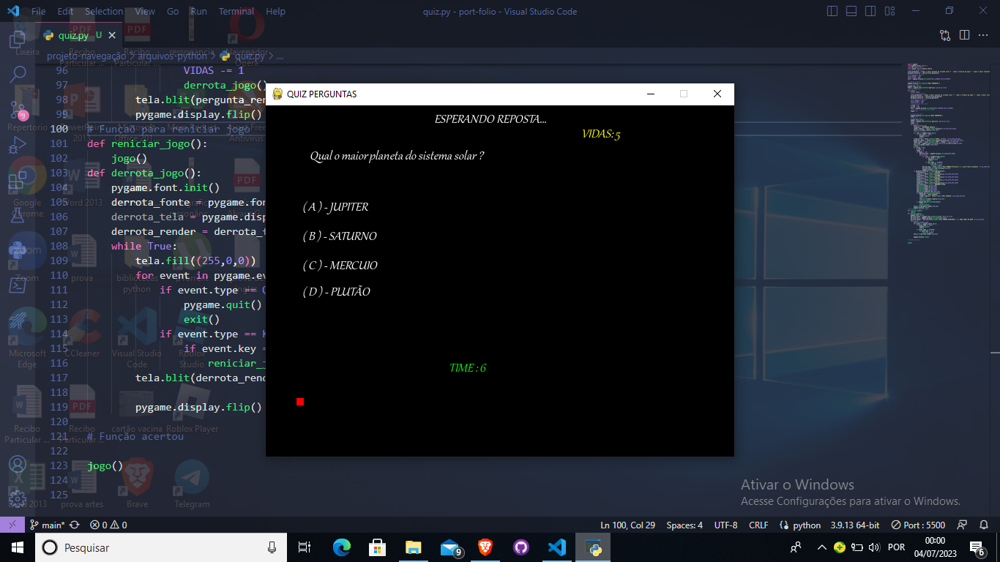
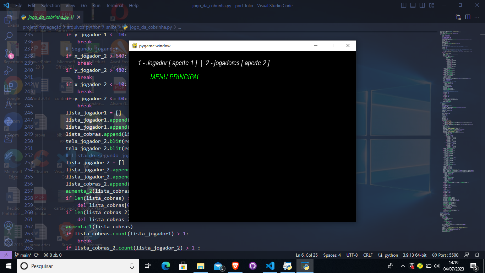

Olá bem vindo a parte de projetos,aqui irei mostrar alguns projetos em python que eu fiz no começo dos meus estudos com programação
Projetos Python

Essa senção irá mostrar alguns projetos em python que eu andei fazendo,atualmente eu não estou estudando muito python e sim mas HTML,CSS E JavaScript,mas ainda continuo estudando python no meu tempo livre
( 1 ) - Sistema de crianção de arquivos e pastas
Esse projeto é relativamente simples para quem tem um pouco já de experiência com python,ele trabalha em conjunto com a crianção de arquivos usando o método with open e também utilizo a biblioteca OS que server para fornecer interatividade com o sistema operacional,ou seja uma conexão entre os codigos em python ao sistema operacional qualquer que seja.
Aqui está uma imagem do código do projeto
Aqui está o codigo fonte caso queira da uma olhada Clique aqui
O programar ainda não tem nenhuma interface gráfica e era executador no proprior intepretador do python,mas esse projeto foi muito importante para mim,para que eu pudesse entender um pouco mais da estrutura with e da biblioteca OS
( 2 ) - Jogo do Quiz em Python
Esse projeto foi um simples jogo quiz feito em python,usando a biblioteca PyGame,foi um projeto relativamente desafiador e eu diria que foi um dos meus maiores projetos até agora com python,ele ainda não está terminando mas ao decorre dos meus estudos com python irei termina-lo o quanto antes.
Aqui está uma imagem do projeto quiz
Esse joguinho também trabalha com mais duas bibliotecas,a sys,que também server para interatividade com o sistema operacional e a random que é muito utilizada para randomiza um elemento,ele também trabalha com um mini-temporizado que se chegar a 10 segundos o usuario perde uma vida e o jogo é reniciado novamente. Aqui está o codigo fonte caso queira da uma olhada Clique Aqui
( 3 ) - Jogo da cobrinha em Python
Esse projeto que eu fiz em python foi atualmente o maior projeto até agora,o jogo também trabalha com a biblioteca Pygame e com as mesmas biblioteca do projeto acima,esse projeto eu fiz quando estava fazendo um curso sobre a biblioteca Pygame
Aqui está uma imagem do jogo da cobrinha
A logica desse projeto trabalha em grande partes com lista,já a movimentação do snike trabalha com eixo x e eixo y,eu diria que é algo simples de entender e não tem muitas dificuldades,ainda pretendo melhora esse jogo e adicionar uma interface grafica mais interativa com o usuário, o jogo também tem uma musiquinha quando o usuario consegue pega a maçã,codigo fonte Clique aqui
Musica do jogoObservação
Lembrando que para rodar todos os projetos em python,você irá precisar de um editor de codigo,pode ser qualquer editor que tenha o interpretador python
Bem essa foi a minha área de projetos em linguagem Python,pretendo muito melhora não só essa parte mas todo o portífolio,deixando muito melhor a medida que for avançado nos estudos de programação,uma interface mais interativa com o usuario,mas por enquanto é isso,espero que tenha gostado :D .